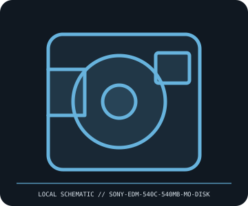

[ REMOVABLE MEDIA // MODEL-SPECIFIC ITEM ]
Sony EDM-540C 540 MB Magneto-Optical Disk
Sony EDM-540C 3.5-inch rewritable MO disk, 540 MB capacity class. This entry records the medium/product only; drives, readers, adapters, interfaces and host devices are separate unless explicitly identified.

IDENTIFICATION: Preserve the full part/model code, capacity and generation from the item label and package. Check the host’s own manual and supported firmware before insertion, formatting or writing.
Format, capacity and compatibility
| Specific product / format | Sony EDM-540C 540 MB Magneto-Optical Disk |
|---|---|
| Generation, capacity and identification | Sony EDM-540C 3.5-inch rewritable MO disk, 540 MB capacity class. |
| Compatibility | Use only in MO drives listing 540 MB media; drive-generation support for 230/640 MB/1.3 GB formats varies. |
| Model/version caveat | Not the existing 230 MB Sony MO medium and not a CD-R; match drive’s supported MO generation. |
Handling and preservation
Keep tape or magnetic cartridges in their protective case, away from dust, shock, moisture, magnets, smoke and heat. Do not touch tape or open the shell. Acclimate after transport, record drive/error history, and validate recovery with a restore test and checksums.
- Retain provenance, packaging and label photographs; document any physical wear, write-protect state, read errors or repair.
- For important data, make separate copies, record checksums and periodically test restoration. A single legacy medium is not a preservation plan.
Model and version notes
Not the existing 230 MB Sony MO medium and not a CD-R; match drive’s supported MO generation.
Product-family resemblance or mechanical fit alone does not guarantee interchange. Verify exact medium generation, host model, interface, firmware and software support.
Manufacturer and standards sources
- Sony EDM-540C product archiveManufacturer, product, or period manual reference for the named medium/model.
- ISO optical storage media catalogueStandards or archival reference for format-family context; exact device documentation governs fit.
Native, formatted, compressed and multi-sided capacities are not interchangeable measurements. Check the source documents for the named SKU and use the host device manual for final compatibility.